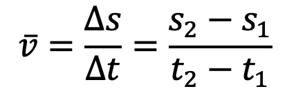
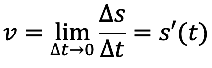
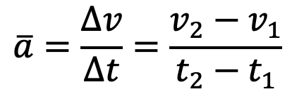
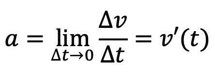

Graf, formel og tekst
Matematiske uttrykk er ofte mer presise og effektive enn ord når vi arbeider med fysikk. Derfor er matematikk blitt fysikkens «språk».
Nøyaktigheten av en måling eller verdi bestemmer hvor mange gjeldende sifre vi oppgir verdien med.
Det skal være like mange gjeldende sifre i svaret på en oppgave som den minst nøyaktige verdien som er brukt i utregningene.
En størrelse har både måltall og enhet.
Stigningstallet til tangenten i en posisjonsgraf gir oss momentanfarten.
Stigningstallet til tangenten i en fartsgraf gir oss momentanakselerasjonen.
Arealet under en fartsgraf gir oss endringen i posisjon.
Arealet under en akselerasjonsgraf gir oss endringen i fart.
Posisjon, fart og akselerasjon
Posisjon, fart og akselerasjon kan være både positive og negative. Du må selv velge hvilken retning som er positiv.
Gjennomsnittsfart er posisjonsendring delt på tid:

Momentanfart er den deriverte av posisjonen:

Gjennomsnittsakselerasjon er fartsendring delt på tid:

Momentanakselerasjon er den deriverte av farten:

Bevegelseslikningene for konstant akselerasjon